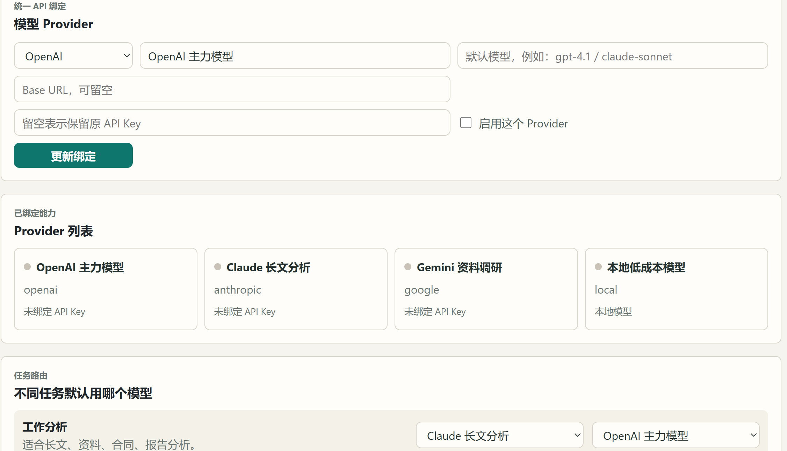

统一 API 绑定
Provider 类型、显示名称、默认模型、Base URL 和 API Key 在一个表单里维护，降低普通用户切换模型的负担。
Local-first AI desktop workbench
AI Home Workbench 面向家庭和普通办公用户，把 Provider 绑定、任务路由、本地知识、项目资料和 Markdown 成果输出整合到一个清晰的桌面工作台。

填入 AdSense 发布商 ID 后，这里会加载真实广告。
这页把 OpenAI、Claude、Gemini、本地模型和后续更多 Provider 放在同一个入口里。用户不用记住每个模型适合什么，只要在任务路由里设好规则，研究、长文分析、方案写作和低成本任务就能自动走到合适的模型。
Provider 类型、显示名称、默认模型、Base URL 和 API Key 在一个表单里维护，降低普通用户切换模型的负担。
每个 Provider 都能看到是否已绑定 Key、是否启用、属于云模型还是本地模型，排查问题时不用翻配置文件。
不同任务默认使用不同模型，长文分析、资料调研、写方案、PPT 大纲和低成本任务可以各走各的路线。
免安装版适合先试用产品核心流程，不需要走安装器。开发者仍然可以下载源码 ZIP 或用 Git 克隆仓库继续研究。
这份说明面向免安装版用户。AI Home Workbench 会把真实资料保存在你选择的本地工作区，应用目录和工作区可以分开管理。
进入 GitHub Releases，下载最新的免安装版压缩包。不要把它放在系统临时目录，建议单独建一个应用文件夹。
解压后进入应用目录，双击启动程序。免安装版不会写入安装器记录，后续更新时可以用新版目录替换旧版目录。
第一次进入时选择一个本地文件夹。应用会在里面创建用户空间、共享知识、模型配置和成果输出目录。
在模型中心维护 OpenAI、Claude、Gemini、DeepSeek、通义千问等 Provider，再为研究、文件分析、方案写作等任务选择默认路线。
早期版本优先输出 Markdown 文件，适合沉淀调研摘要、会议材料、PPT 大纲和项目笔记。后续会扩展 Word、PPT、PDF 和网页预览。
为不同家庭成员建立独立空间，也保留共享知识区，适合共用电脑或共用模型订阅的场景。
把不同任务分配给不同模型 Provider，保留备用路线和成本限制，降低普通用户切换模型的门槛。
项目、知识、聊天记录和成果输出都围绕本地文件夹组织，用户能看见自己的数据放在哪里。
重要输出不只留在对话窗口里，而是沉淀成 Markdown、文档、PPT 大纲和后续可预览的页面。
内容广告位已预留，配置 AdSense 后自动启用。
站点上的下载和使用说明会跟随这个仓库更新。免安装版、源码包和后续版本都会优先放在 Releases 页面。
不需要。当前优先提供免安装版，下载压缩包后解压运行即可。源码 ZIP 和 Git 克隆入口保留给开发者。
不会。这个站点只是产品展示和下载说明。AI Home Workbench 的真实模型 Key 应在本地应用和本地工作区中维护，不应提交到代码仓库。
适合起步。页面包含原创说明、下载链接、GitHub 链接、隐私页、robots、sitemap 和广告位。AdSense 仍需要你的账号、域名审核和真实发布商 ID。